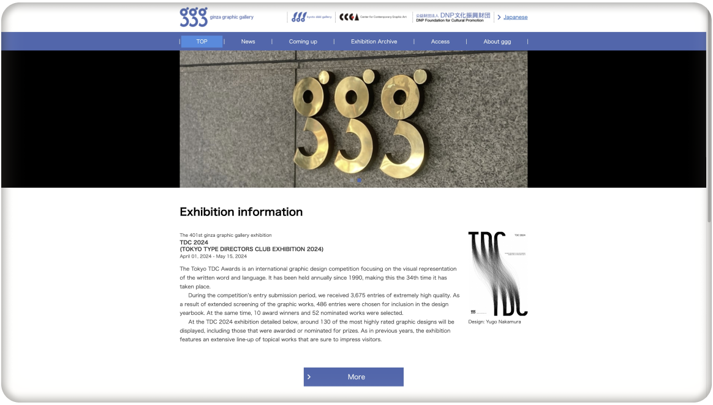

TOKYO
Ginza graphic gallery

The 401st exhibition at Ginza Graphic Gallery, "TDC 2024," will run from April 1 to May 15, 2024. It showcases the Tokyo Type Directors Club's annual competition, now in its 34th year, with 130 highly rated graphic designs, including award winners and nominees from 3,675 entries. Design by Yugo Nakamura.
MAP
HOURS
Site